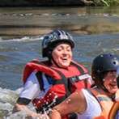
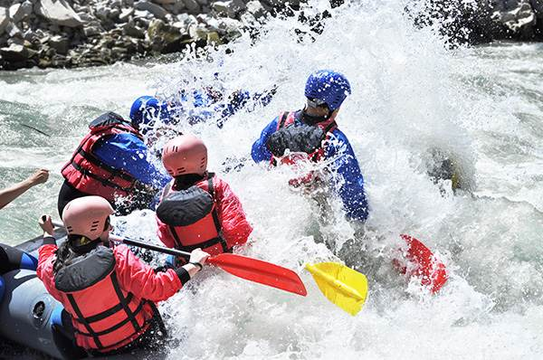
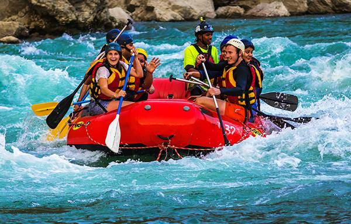
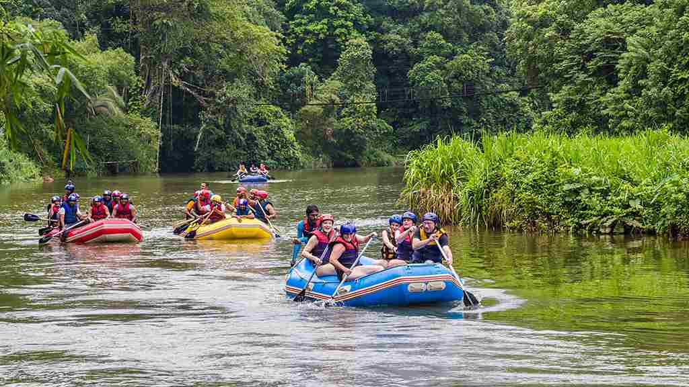

Welcome to Radical Rapids! We specialize in creating unforgettable outdoor experiences through safe, guided river rafting adventures. From scenic relaxing floats to thrilling rapid runs, we have the perfect journey waiting for you.



Welcome to Radical Rapids! We specialize in creating unforgettable outdoor experiences through safe, guided river rafting adventures. From scenic relaxing floats to thrilling rapid runs, we have the perfect journey waiting for you.
Radical Rapids was founded over a decade ago by a group of friends who spent their weekends exploring rivers across the region. Their excitement for white-water rafting inspired them to create a place where others could experience the same sense of freedom, challenge, and connection with nature. What began as a small local adventure has grown into a professional rafting company known for excellence and safety.

As interest grew, the company expanded by adding new rafts, improved equipment, and certified guides who are passionate about teaching and leading river expeditions. Each year brought new milestones from opening family-friendly scenic routes to organizing advanced rapid challenges for thrill-seekers. Through it all, the mission has stayed the same: provide unforgettable outdoor adventures while protecting the natural rivers we love.




